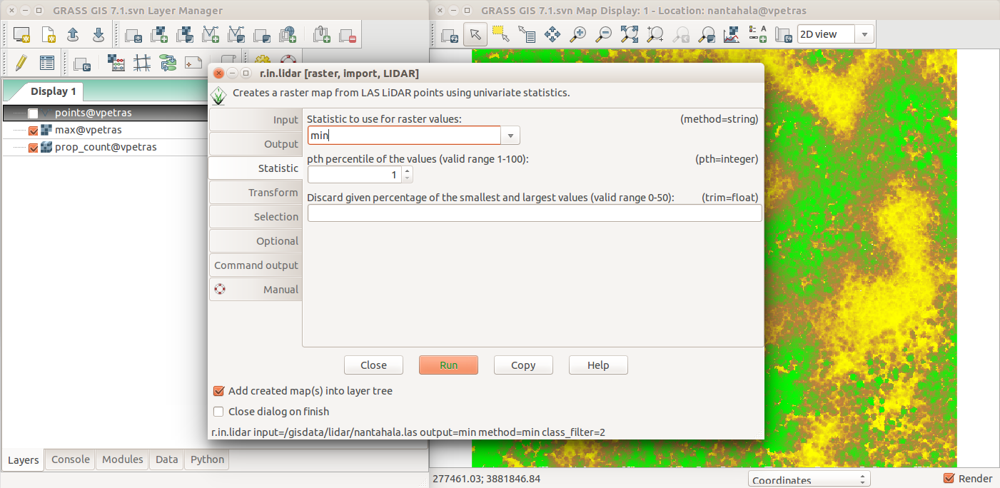
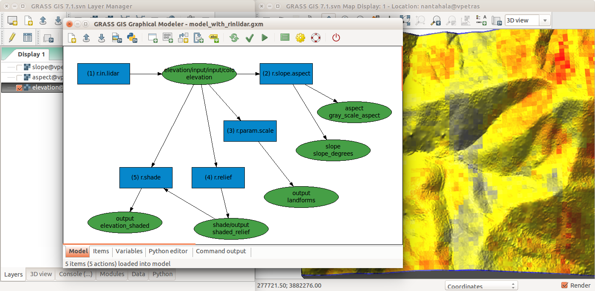

New modules: query, aggregation, conversion, statistics, gap filling
Gebbert, S., Pebesma, E., 2014. TGRASS: A temporal GIS for field based environmental modeling.
Environmental Modelling & Software 53, 1-12.
MODIS land surface temperature
14 years of 4/day (20K) maps, entire Europe, 250m res
advanced statistics to fill no-data and enhance resolution,
multivariate regression includes elevation, solar angle, precipitation
EuroLST: http://gis.cri.fmach.it/eurolst/, Metz, Rocchini, Neteler, 2014: Rem Sens, 6(5): 3822-3840
DEM time series visualization
Jockey's Ridge migration 1974 - 2014, lidar time series
Hardin, E., Mitasova, H., Tateosian, L., Overton, M., 2014, GIS-based Analysis of Coastal Lidar Time-Series, Springer Briefs in Computer Science, Springer, New York, 84 p.
Starek, M.J., Mitasova H., Wegmann, K, Lyons, N., 2013,
Space-Time Cube Representation of Stream Bank Evolution Mapped by
Terrestrial Laser Scanning, IEEE GRSL 10(6), p. 1369-1373
Mapping with sUAS
Trimble UX5 UAS flight plan analysis
Surface water flow modeling
SfM in Agisoft or OpenDroneMap > point cloud
DSM interpolation and path sampling-based surface runoff modeling in GRASS GIS
Jeziorska, J; Mitasova, H; Petrasova, A; Petras, V; Divakaran, D; Zajkowski, T., 2016, Overland flow analysis using time series of sUAS-derived elevation models, ISPRS Annals of the Photogrammetry, Remote Sensing and Spatial Information Sciences, Vol III-8, pp.159-166
Geomorphons
Basic landforms extracted for the entire US
Interactive search of similar landuse patterns
On-line geospatial analytics: http://sil.uc.edu/
Spatial Informatics Laboratory, University of Cincinnati
More than just code
Link to research papers
Public author & accessible code
Discussions archived
since 1991
User Interfaces
Command Line Interface
r.fill.dir input=elev output=fill direction=dir
scripting with Shell, Bash, cmd.exe, ...
Graphical User Interface

Graphical Modeler

Python
since Python existed (90s)
API and use in GRASS GIS itself in 2008
grass package part of GRASS GIS
import grass.script as gs
gs.run_command('r.fill.dir', input='elev',
output='fill', direction='dir')